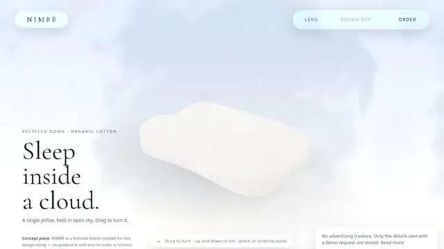
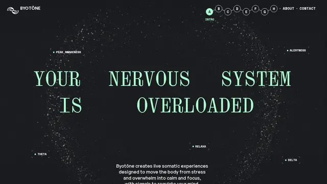
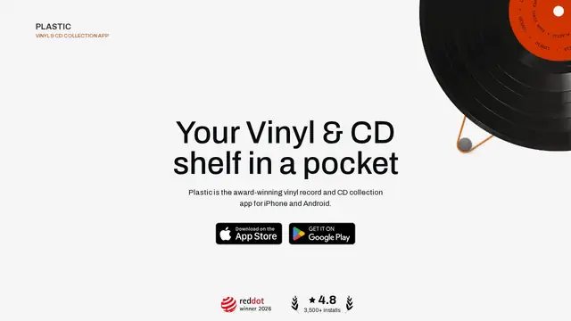
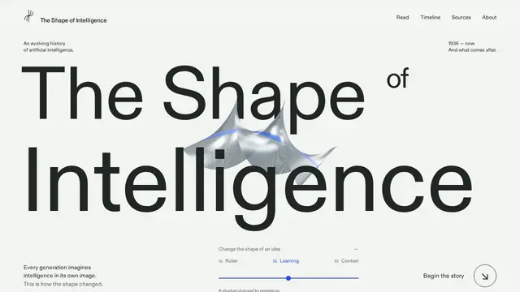
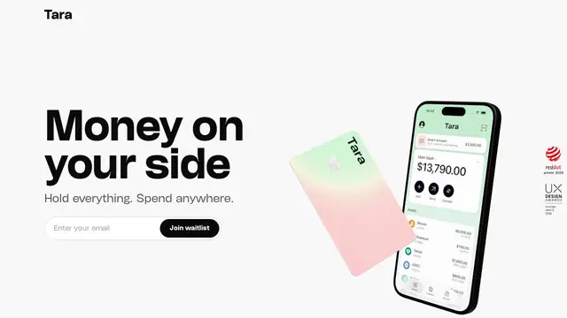
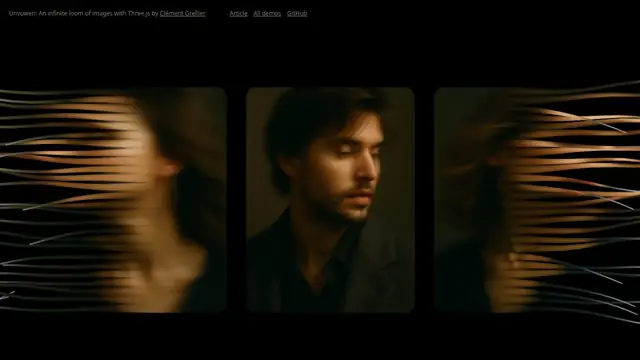
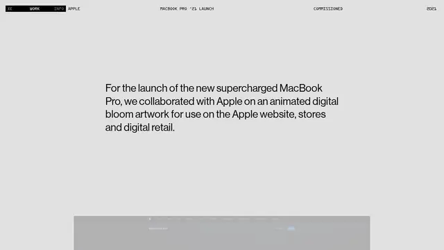
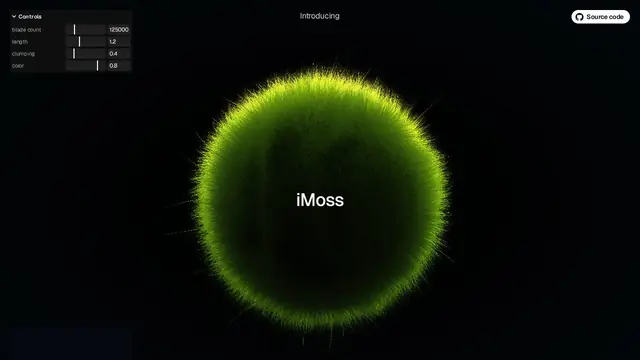

NIMBÉ
四章 WebGL 枕头秀：按压棉花、透镜下到织纹、再看夜幕落下——没有一张产品照片。

打开网站 ↗它是什么：一个虚构颈椎枕的品牌站：没有一张产品照片，全靠 3D 场景讲“软、透气、织得细”。
好在哪：四章节奏很清楚：清晨拖动云朵枕 → 按下去看泡沫回弹 → 拿放大镜看到织线 → 夜里关灯只剩这只枕头。
怎么做到的：
- 每一章是一个固定的镜头机位，滚动时相机在机位之间平滑移动。
- 按压时在模型上做一个“凹坑再弹回”的变形，模拟记忆泡沫。
- 放大镜里换成高细节的织纹贴图，远看是枕头、近看是布料。
完整技术拆解
今日拆解 · NIMBÉ
- Live: https://nimbe-nine.vercel.app/
- Gallery: https://mesh3d.gallery/experiment/nimbe-a-pillow-down-to-the-thread
- Author: Lovable（HTML meta
author/twitter:site） - Bundle:
/assets/index-CvE6juaW.js（约 350 KB）+/assets/routes-BGjP-mT_.js（约 696 KB）+/assets/docs-BM9FQdyQ.js+ CSS - 证据目录：本文件夹（
index.html、JS/CSS）
为何选它
8 条里它最完整地把「一件虚构颈椎枕」做成可触摸的四章 WebGL 叙事：Dawn 拖转云朵枕 → Touch 按压开孔泡沫回弹 → Matter 手持透镜钻到 210 支平纹织线 → Night 关灯只留一件枕。没有产品摄影，全靠几何、自定义着色与镜头机位讲材质——比落地页或 App UI 更值得拆开看。
实际在源码里找到的技术栈
three.js r180；window.__THREE__=\180\`；WebGLRenderer` 出现 32 次ShaderMaterial / RawShaderMaterial / MeshPhysicalMaterial；片断里注入 nimbeGeoNormal；foam 材质 uniform：uAmount、uFilament、uCavityInstancedMesh 出现 16 次（推测用于棉絮/纤维簇）e.version=\19.2.8\`；hydrateRoot；章节 UI 用 useState；未找到 @react-three/fiber / useFrame / Drei`le.gsap=or、gsapVersions、ScrollTrigger；未找到明确的 3.x.x 版本字面量 → 版本标「未证实」<filter id="nimbe-refract"> + feImage displacement；文案 *You are holding a lens*vite 字符串；资源 hash 文件名navigator.gpu、R3F、Howler、Matter.js（matter 只是章节状态名 tissage）、leva（命中为 Three 插值器字段伪影）noscript / meta 文案写明：*four-chapter WebGL showcase* · *One scene, no photographs.*
核心效果怎么工作（源码 + 标明推测）
1. 四章机位与文案（确认）
章节对象（节选）：
dawn：Recycled down · Organic cotton/ *Sleep inside a cloud.*touch：Open-cell foam · 45 kg/m³/ *Press and hold the cotton*matter：210 threads · plain weave/ *You are holding a lens*night：100 nights · made in France/ *Then the night falls.*
另有机位表 mm（azimuth / elevation / zoom）与场景别名映射 Jm={dawn:\hero\, touch:\topdown\, matter:\threequarter\, night:\night\}。
2. 按压泡沫（确认 + 推测）
状态机字段：press / pressTarget、dive、open / openTarget、ring。Foam 网格挂在 foamScene，材质带 uAmount / uFilament / uCavity。推测：长按把 pressTarget→1，顶点沿法线凹下去再 spring 回弹；navigator.vibrate 在支持设备上给触感。
3. 透镜下到织纹（确认）
Matter 章提示持镜；失败日志：[nimbe] la loupe n'a trouvé aucun point de coton à viser。DOM 使用 url(#nimbe-refract)。推测：指针对准棉点后 openTarget 放大「凝胶」开口，相机 dive 到织线尺度。
4. 伪代码（忠实于源码结构）
boot:
hydrateRoot(<App/>) # React 19.2.8 UI + 四章文案
renderer = new WebGLRenderer(...) # three r180
pillow = buildFoamMesh(foamGeo, foamMat{uAmount,uFilament,uCavity})
cameraRig = FramingController(mm) # azimuth/elevation/zoom per chapter
each frame:
press = lerp(press, pressTarget, dt)
dive = lerp(dive, diveTarget, dt)
foamMat.uAmount = press
cameraRig.aim = mm[chapterAlias]
render pillow → canvas
# Matter 章：SVG #nimbe-refract 叠在透镜 UI 上
on UI:
chapter next/prev → setState + camera aim + (可选) vibrate
pointer down on cotton → pressTarget = 1
pointer up → pressTarget = 0如果我来重做（步骤清单）
- Vite + React 19，全屏 canvas；Three r180 走普通
WebGLRenderer（不必 WebGPU）。 - 做一个枕头 SDF/细分网格；片断着色器用
uAmount做按压凹陷，辅色uFilament/uCavity。 - 写四章状态：每章文案 + 相机 azimuth/elevation/zoom；GSAP 或自研 lerp 切机位。
- Matter 章：DOM 圆形透镜 + SVG
feDisplacementMap（或后处理折射）；射线检测「棉点」再允许 dive。 - Night 章：降环境光 / 曝光，只留枕轮廓。
- 可选：
navigator.vibrate做按压触感；无 WebGL 时给清晰降级页。
一句话
NIMBÉ 用 Three r180 + 自研泡沫着色 + 四章镜头，把「没有照片的产品页」做成可按、可窥、可入夜的 WebGL 小品。
零基础也能看懂。先认识这件作品用到的技术，再学一个知识点。
1技术栈小白版
只列拆解里在源码中确认过的技术。点开看它在这件作品里做了什么。
Three.js r180（WebGL 渲染器）
在这件作品里用成熟的 WebGL 路径画出那只枕头和四个章节的场景（这次没有用 WebGPU）。
怎么认出来很多 3D 网页都用它。在控制台输入 __THREE__ 能看到版本号（这里是 "180"）。
自定义着色器 + 物理材质
在这件作品里泡沫材质上有作者自己加的三个旋钮：按压量、纤维、孔洞。你按下去时，表面会凹陷。
怎么认出来材质有很特别、很写实的质感（绒、泡沫、布纹），而且会随你的动作变形。
GSAP + ScrollTrigger
在这件作品里源码里内嵌了 GSAP 和 ScrollTrigger（没找到明确版本号，所以不写版本）。这类工具通常用来编排章节切换和滚动动画；具体用在哪一步，拆解没有确认。
怎么认出来你一滚动页面，画面就跟着推进；停下滚动，它也停下。
React 19.2.8（界面外壳）
在这件作品里管四个章节的文案、按钮和状态；3D 画面由 Three.js 负责，两者分工合作。
怎么认出来看不出来，它管的是普通网页那部分。
SVG 折射滤镜
在这件作品里Matter 这一章说「你手里拿着一个透镜」，透镜下的画面就是用这个滤镜扭曲的。
怎么认出来一个圆形区域里的画面，像隔着玻璃或水珠那样被弯曲。
2今日知识点
缓动：为什么东西不该匀速动
现实里几乎没有东西是「匀速」开始和停下的：汽车起步会慢慢加速，刹车会慢慢减速；你推上抽屉，它最后会轻轻停住。如果屏幕上的东西从静止突然匀速冲出去、到终点「咔」地停住，我们就会觉得它像机器、很生硬。
缓动（easing），就是控制「速度怎么变化」。最常用的三种：
- 缓入（ease-in）：开头慢、越来越快，适合「离开」画面的东西；
- 缓出（ease-out）：开头快、结尾慢慢停，适合「进入」画面的东西，也是最常用的一种；
- 缓入缓出（ease-in-out）：两头慢、中间快，适合从 A 点移到 B 点。
NIMBÉ 里能看到两种缓动。一是切换章节时，镜头平滑地飞到下一个机位，而不是瞬间跳过去（GSAP 这类工具就是专门做这种过渡的）。二是你按压枕头时，「按压量」不是一下子跳到底：源码里有 press（现在按了多少）和 pressTarget（想按到多少）两个值，拆解的伪代码显示前者每一帧朝后者靠近一点——这种「追着目标走」的写法叫 lerp，天生就是先快后慢的缓出，所以泡沫的凹陷和回弹才显得软。
一句话记住：同样的距离、同样的时间，缓动不同，性格就不同——匀速像机器，缓出像被温柔地放下，带回弹的像装了弹簧。
它从哪里来
迪士尼动画师 Frank Thomas 和 Ollie Johnston 在 1981 年的书《The Illusion of Life》里总结了「动画 12 原则」，其中一条就叫「慢入慢出（Slow In and Slow Out）」：手绘动画时，在动作的开头和结尾多画几张，中间少画几张，动作就显得自然。
2000 年代初的 Flash 网页时代，Robert Penner 整理并公开了一套缓动公式（quad、cubic、elastic、bounce……）。后来很多动画工具里的缓动名字，都能追溯到这一套。
经典参考
- 迪士尼「动画 12 原则」中的「慢入慢出」出自《The Illusion of Life》（1981），网上搜「12 principles of animation」有很多动图演示。
- easings.net把常见缓动曲线画成图，点一下就能看到小球是怎么动的。
- cubic-bezier.comLea Verou 做的小工具：拖两个点自己调缓动曲线，还能和匀速并排比较。
- 打开 easings.net，依次点 easeInQuad、easeOutQuad、easeInOutQuad，看小球怎么动。给每一种起个外号，比如「起跑型」「刹车型」。
- 打开 cubic-bezier.com，点 GO，对比 linear（匀速）和 ease-out。哪一个更像真实的物体？
- 回到 NIMBÉ，切换一次章节，只盯着镜头最后半秒：它是「咔」地停住，还是慢慢停稳？
- 拿起手机，打开再关闭一个 App，留意画面放大、缩小时的速度变化。你能说出它是哪一种缓动吗？
小词典
- 缓动（easing）
- 动画里速度的变化方式，决定动作是生硬还是自然。
- 缓出（ease-out）
- 开头快、结尾慢慢停下，最常用。
- 缓入（ease-in）
- 开头慢、越来越快，适合离场。
- lerp（插值）
- 每一帧朝目标走剩下距离的一小部分，效果是先快后慢地「追上」目标。
- 时间轴（timeline）
- 把多个动画按时间先后排好的「分镜表」。
3知识地图进度







设计雷达 · 每天 8 个值得看的网站、App UI 和网页小游戏